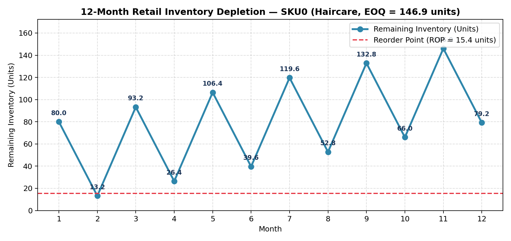
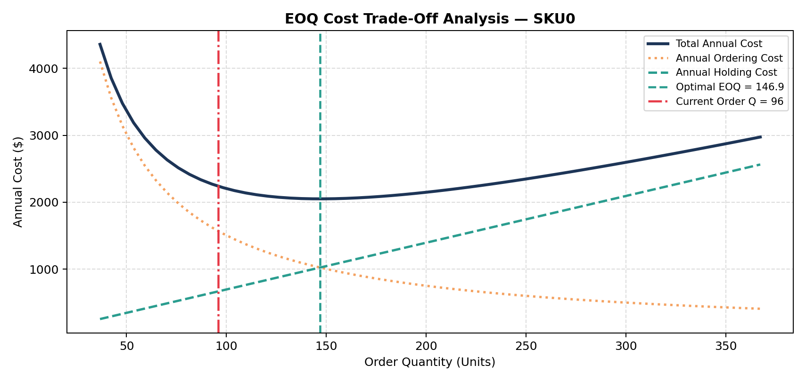
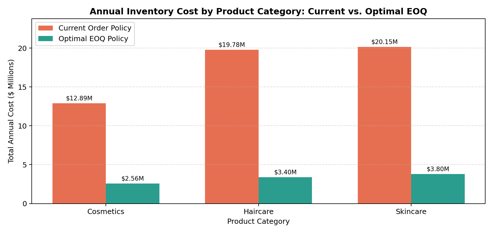
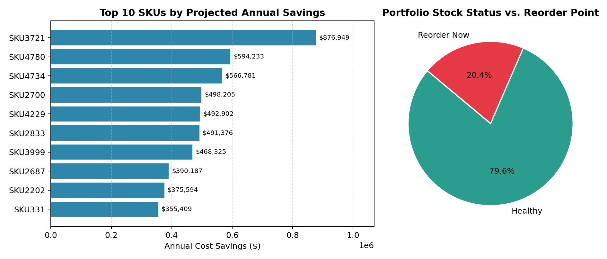

Using the Economic Order Quantity formula EOQ = √(2DS / H), annual demand (D) is mapped to
Number of products sold, ordering cost (S) to Costs, and annual holding cost (H)
to 20% × Price. Reorder Point is computed as (D / 365) × Lead times.

SKU0 (D = 802, EOQ = 146.9 units, ROP = 15.4 units), with every month labeled with remaining units.
SKU0, comparing optimal EOQ (146.9 units) against the current order quantity (96 units).
cosmetics, haircare, and skincare under the current policy ($52.82M total) vs. optimal EOQ ($9.76M total).